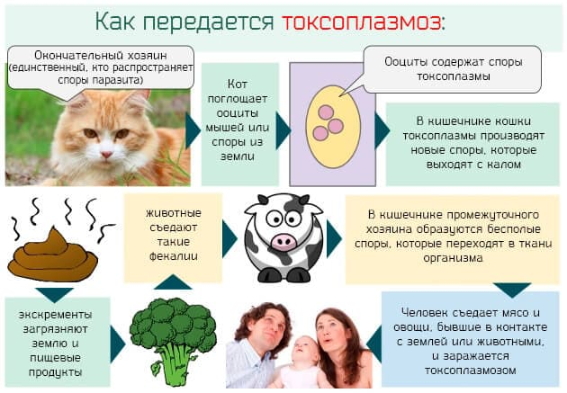

Токсоплазмоз – болезнь, возбудитель которой не относится ни к вирусам, ни к бактериям. Вызывает его токсоплазма – широко распространенный в природе «зверь», представитель типа простейших.
Осведомленность населения о том, кто такие простейшие, исчерпывается, как правило, информацией, полученной в средней школе. Безвредная и занимательная инфузория-туфелька – проста, мило шевелит ресничками и не вызывает ничего, кроме симпатии (особенно если не надо объяснять учителю, что там у нее внутри).
Токсоплазма под микроскопом тоже вполне симпатична, напоминает, правда, не туфельку, а дольку апельсина, но на этом все положительные сравнения заканчиваются. По-латыни она называется Toxoplasma gondii – в честь живущего то ли в Тунисе, то ли в Алжире грызуна гонди, у которого токсоплазма впервые была обнаружена аж в 1908 г.
С того времени удалось узнать про токсоплазму почти все – как размножается, как происходит передача инфекции, как развивается болезнь. Известны симптомы, способы лечения и профилактики. Но больных токсоплазмозом меньше не становится – может быть, потому, что владеют информацией очень немногие. Давайте же вместе присоединимся к узкому кругу посвященных.
Токсоплазма способна размножаться двумя путями – половым и бесполым. В обоих случаях образуется несколько промежуточных форм, и каждая форма имеет свое собственное название. Эти названия даже произносить жутко – невольно создается впечатление, что их (эти названия) специально придумали для издевательства над студентами-медиками, которые седеют, дергают конечностями и впадают в депрессию при одной только мысли о том, что на экзамене по микробиологии вытянут билетик со словом «токсоплазмоз».
Не верите – убедитесь сами. Всего две цитаты из учебника микробиологии:
«…часть паразитов проникает в эпителиальные клетки кишечника, где происходит процесс шизогонии с образованием 4–30 мерозоитов. После нескольких циклов размножения образуются микрогаметоциты и макрогаметоциты, в результате слияния которых формируется ооциста».
«Внутри ооцисты имеются две спороцисты с четырьмя спорозоитами. В процессе множественного деления возникают мерозоиты…»
А еще в учебнике пишут про трофозоитов, тахизоитов и брадизоитов.
Ну как? Думаю, комментарии излишни – вот вам и простейшее!
Почему все-таки важно знать, что существуют два пути размножения?
Дело в том, что, размножаясь в кишечнике половым путем, токсоплазмы образуют цисты, весьма устойчивые к факторам внешней среды. Покидая кишечник, они долго сохраняют жизнеспособность, не боятся высушивания, низких и высоких температур и, как следствие, являются источником заражения других организмов. Если же размножение бесполое – болезнь возникает, но «пострадавший» практически не заразен для окружающих (устойчивые цисты не образуются).
Токсоплазмозом болеют многие животные – и дикие, и домашние. Собаки, кошки, кролики, обезьяны, свинки, мышки, суслики, куры, голуби и т. д. – всего около 300 видов млекопитающих и 60 видов птиц. Человек тоже болеет. Но!!! Половое размножение токсоплазм происходит только в кишечнике кошек и других представителей семейства кошачьих.
Это очень важно именно потому, что, заболев токсоплазмозом, ни человек, ни собака, ни курица, ни морская свинка не становятся заразными. Короче говоря, токсоплазмоз – индивидуальная проблема конкретного индивидуума. Этого индивидуума нельзя в буквальном смысле есть поедом (т. е. заниматься каннибализмом: мясо – источник инфицирования), но все остальное с ним (этим индивидуумом) проделывать можно: целоваться, обниматься, есть из одной тарелки, вступать в половой контакт, при этом вероятность заразиться токсоплазмозом практически равна нулю. Не стоит разве что кровь от него переливать да органы пересаживать – хотя и в этом случае «подцепить» болезнь весьма проблематично.
И только кошка – милая, пушистая, нежная и очаровательная – является потенциальным источником и главным распространителем инфекции. И если дитя поиграет в облюбованной кошками песочнице, токсоплазмоз ему (дитю) гарантирован почти на 100 %. И если ваша мяукающая любимица хоть иногда покидает стены квартиры, если она хотя бы изредка ест сырое мясо, – токсоплазмоз у нее имеется с максимально возможной степенью вероятности.
Информация к размышлению: за 15–20 дней болезни одна кошка выделяет во внешнюю среду около 2 миллиардов цист, которые сохраняют свою заразность до двух лет!
Заполучить токсоплазмоз можно, отведав мясо, например, инфицированного кролика, барашка, свинки и т. д. Мясо, разумеется, должно быть сырым, ибо малейшая термическая обработка токсоплазму убивает. Люди нечасто едят сырое мясо, но лизнуть языком котлетный фарш – дело привычное для многих домохозяек. А в результате – кошки нет и не было, а токсоплазмоз присутствует.

Еще один способ инфицирования – употребление немытых овощей и фруктов: в садах и огородах, как известно, водится немало представителей славного семейства кошачьих.
Немедленно остановитесь! Не надо выгонять кошку из дома! Не надо вытаскивать ребенка из песочницы! Не надо протирать спиртом яблоки!
Давайте разбираться дальше.
* * *
С учетом легкости заражения (и кошек, и немытых фруктов-овощей в нашей жизни предостаточно) не встретиться с токсоплазмой в течение жизни весьма сложно, но ведь больных вокруг нас не очень-то и много. Вот и получается, что на самом деле токсоплазмоз не так страшен, как может показаться на первый взгляд.
Дело в том, что организм нормального человека – будь то взрослый или ребенок – довольно легко справляется с токсоплазмами. После попадания паразита в желудочно-кишечный тракт возникает сложная ответная реакция, но результат почти всегда предопределен – выработка антител, нейтрализующих токсоплазмы, и формирование стойкого (на всю оставшуюся жизнь) иммунитета.
Интересен тот факт, что даже самое первое заражение, сопровождающееся довольно существенной реакцией иммунной системы, как правило, не приводит к возникновению каких-либо симптомов – человек чувствует себя совершенно здоровым и фактически так оно и есть.
Логичный вывод: токсоплазмоз не является сколько-нибудь существенной проблемой лишь при одном, но обязательном условии – наличии у человека полноценного иммунитета. Неудивительно, что у больных, например, СПИДом токсоплазмоз при инфицировании развивается почти всегда. Мирно дремавшая в организме токсоплазма может активизироваться и вызвать тяжелую болезнь на фоне любых действий (облучение, использование угнетающих иммунитет препаратов) или заболеваний (герпетическая инфекция, цитомегаловирусная инфекция, инфекционный мононуклеоз и т. п.), приводящих к снижению иммунитета.
Хотелось бы обратить внимание на то обстоятельство, что для возникновения токсоплазмоза снижение иммунитета должно быть довольно существенным. Если у дитя регулярно бегут сопли, если врачу «не очень нравится анализ крови», если после очередного ОРЗ удалось «заработать» воспаление легких и т. п. – это еще не повод убиваться, паниковать и общаться с кошкой исключительно в перчатках и противогазе.
Опять-таки, если у человека диагностирован токсоплазмоз – не просто обнаружена токсоплазма или антитела к ней, а имеются конкретные симптомы болезни, – всегда следует направить определенные усилия на поиск причинного фактора, который обусловил столь выраженное снижение иммунной защиты организма. Неудивительно, что обнаруженный токсоплазмоз является серьезным и обязательным основанием для тщательного обследования прежде всего на ВИЧ-инфекцию (вирус иммунодефицита человека – возбудитель СПИДа).
Коль скоро мы упомянули симптомы болезни, заметим, что они не специфичны (кроме поражения глаз). Т. е. нет определенного клинического признака, позволяющего с уверенностью диагностировать именно токсоплазмоз. Токсоплазма с током крови разносится из кишечника и в лимфатические узлы, и во внутренние органы, поражает нервную систему – понятно, что симптомы могут быть самыми разнообразными.
Чаще всего симптоматика ограничивается небольшим увеличением лимфоузлов (как правило, шейных). Может наблюдаться повышение температуры тела, увеличение печени и селезенки, фарингит. В более тяжелых случаях развивается воспаление легких, поражается головной мозг (энцефалит), внутренняя оболочка сердца (эндокардит), возможно специфическое поражение органа зрения – воспаление сетчатки и сосудистой оболочки глаза (токсоплазмозный хориоретинит) и (или) воспаление сосудистой оболочки глазного яблока (токсоплазмозный увеит).
При значительном снижении иммунитета проявления болезни крайне серьезные – наиболее часто развивается очень тяжелое поражение головного мозга (некротизирующий энцефалит), не редкость эндокардит и пневмония.
Подведем предварительные итоги.
Токсоплазмоз – широко распространенное заболевание человека и животных. В подтверждение этого приведем тот факт, что до 70 % населения может быть инфицировано токсоплазмой, а 50 % – это почти норма. При этом 99,99 % из числа инфицированных никогда не испытывали, не испытывают и вряд ли когда-нибудь что-либо нехорошее в этой связи испытают.
Теперь самое главное.
Реальную, действительно реальную, действительно вероятную и очень (!) серьезную опасность токсоплазмоз представляет тогда, когда женщина, ранее не контактировавшая с токсоплазмой, инфицируется во время беременности. Эта опасность распространяется не на беременную, а на плод. Токсоплазма способна проникать через плаценту и вызывать болезнь у еще не родившегося ребенка. Тяжесть поражения плода тесно связана со сроками беременности – чем моложе плод, тем тяжелее болезнь, которая называется врожденным токсоплазмозом. Тяжесть заболевания (особенно при заражении в первые три месяца беременности) бывает настолько велика, что происходит гибель плода. Но чаще ребенок рождается с очень тяжелыми поражениями нервной системы (прежде всего головного мозга), глаз, печени, селезенки.
Существенное значение имеет и тот факт, что проницаемость плаценты для токсоплазм изменяется – она (проницаемость) тем выше, чем больше срок беременности. Так, при инфицировании в первые три месяца беременности вероятность того, что плацента «не справится» и токсоплазма поразит плод, составляет около 15 %. Во втором триместре риск возрастает до 25 %, в третьем – почти до 70 %.
Врожденный токсоплазмоз имеет разные формы, иногда его проявления после рождения ребенка отсутствуют (точнее, не обнаруживаются), а в дальнейшем нарушения зрения и умственная отсталость (часто весьма выраженная) расставляют печальные диагностические точки над i.
Если во время беременности у женщины диагностируется заражение токсоплазмой, то, разумеется, проводится экстренное лечение. Но врожденный токсоплазмоз весьма трагичен по своим последствиям. И, как это ни грустно, любое лечение лишь уменьшает вероятность крайне тяжелого поражения плода (примерно в два раза), но вовсе не гарантирует, что все будет хорошо. Шансов родить полноценного человека очень немного – руки и ноги у такого ребенка будут, но надежд на неповрежденный головной мозг и нормальные глаза почти нет.
Утешает лишь тот факт, что токсоплазмозное поражение плода может случиться лишь один раз (лишь при одной беременности). Все последующие дети уже будут надежно защищены образовавшимися антителами.
Неудивительно, что токсоплазмоз у беременных, с учетом полной бесперспективности лечения родившегося ребенка, рассматривается как прямое показание к ее (беременности) прерыванию, разумеется, с согласия самой беременной.
Природа и сама активно заботится о том, чтобы рождения не допустить: при раннем заражении почти всегда происходит выкидыш. Но сейчас при угрозе срыва врачи могут сохранить почти любую беременность, и отсюда очень важно, чтобы на фоне лечения проводилось и соответствующее обследование.
Обследование – это вообще отдельная тема, ибо количество стрессов и угроз срыва, возникших из-за неправильной трактовки результатов, – удивительно велико.
Но на самом деле все не так уж и сложно.
Разработано множество методов диагностики токсоплазмоза, но наиболее надежным по праву признан иммуноферментный анализ (ИФА). Суть этого метода – определение специфических антител к токсоплазме, при этом не только дается ответ на вопрос, есть они (антитела) или нет, но и определяется их (антител) количество.
Для того чтобы правильно понять результаты ИФА, следует владеть не особо сложными знаниями из области физиологии. Дело в том, что непосредственно после заражения организм начинает вырабатывать особые антитела (иммуноглобулины), которые называются IgM (или – иначе – ранними антителами). Сохраняются (и обнаруживаются) они в крови максимум в течение года, но, как правило, и того меньше, а затем исчезают, чтобы больше уже никогда не появиться. Вслед за IgM в крови появляются IgG, которые сохраняются в течение всей последующей человеческой жизни.
Нетрудно сообразить, что:
– если обнаружен IgM, то человек заразился совсем недавно;
– если обнаружен IgG, а IgM отсутствует, то речь идет о том, что человек уже выработал иммунитет к токсоплазме, поскольку заражение произошло в прошлом;
– возможны и более сложные для трактовки варианты. Например, обнаружен IgG и небольшое количество IgM. В таком случае исследование повторяют через 2 недели, и если количество IgG увеличилось, значит, продолжается активная выработка иммунитета, если осталось на прежнем уровне – значит, болезнь уже в прошлом (просто в не очень далеком прошлом).
Трактовка результатов ИФА у новорожденных имеет свою специфику, но, в свою очередь, позволяет ответить на вопрос о наличии или отсутствии врожденного токсоплазмоза.
Теоретически в цивилизованном обществе беременность – явление планируемое. И обследование на токсоплазмоз «до того как» – очень желательно и очень целесообразно. Ибо интенсивность профилактических мероприятий очень зависит от того, в каких отношениях с токсоплазмой находится организм будущей матери.
Если обнаружен IgG, так это повод вздохнуть с облегчением, поскольку во время беременности плод будет надежно защищен. Если IgM – «свежее» инфицирование, с зачатием надобно подождать. Если антитела не обнаружены – быть осторожной, твердо усвоить мероприятия по профилактике инфицирования и неукоснительно их соблюдать.
К сожалению, в нашем географическом пространстве планирование беременности скорее исключение, нежели правило. Но знать и понимать значение описанных выше результатов обследования не помешает и во время беременности уже состоявшейся. Только вот при обнаружении IgM уже придется не ждать, а принимать очень ответственные и часто очень неприятные решения.
Упомянутые нами профилактические мероприятия в целом очевидны и логично вытекают из уже описанных выше способов заражения. В то же время их перечисление может оказаться совсем не лишним (что, по большому счету, справедливо для любой инфекции):
• исключить из пищи термически необработанное мясо;
• не пробовать сырой фарш;
• не жалея мыла и времени, мыть руки после работы с мясом, после работы в поле-огороде;
• самым тщательным образом мыть овощи-фрукты, зелень;
• обследовать и, если надобно, пролечить, а еще проще – удалить из дома кошку.
Это, так сказать, индивидуальные профилактические мероприятия, позволяющие не имеющей иммунитета женщине защитить плод в течение беременности. В то же время актуальны и действия более глобальные, ставящие своей целью уменьшение распространения токсоплазм в природе. Действия эти самым тесным образом связаны с кошками. Последние делятся на домашних и беспризорных. Домашних обследуют и лечат, уличных отлавливают и, несмотря на протесты любителей животных, пытаются (заведомо безрезультатно) ликвидировать как класс.
В отношении домашней мурки – полезно исключение из рациона сырого мяса, желательна (обязательна) регулярная дезинфекция ее песочного унитаза.
Поскольку окончательное искоренение беспризорных кошек маловероятно, неплохо обратить внимание на детские песочницы. Теоретически органы санитарного надзора обязаны регулярно исследовать и дезинфицировать песок, но более правильно не надеяться на тетю в белом халате, а организовать покрытие песочниц полиэтиленовой пленкой или деревянными щитами (при появлении детей и отсутствии кошек покрытие можно убрать).
Несколько слов о лечении. Некоторые препараты (антибиотики, сульфаниламиды и др.) обладают выраженной активностью по отношению к токсоплазмам. Количество лекарственных средств не особенно велико, но выбор, тем не менее, есть. И для человека, и для животных разработаны соответствующие схемы лечения, которое обычно длительное – используется несколько курсов и определенные комбинации препаратов.
Эффективность лечения высока лишь при остром токсоплазмозе, но оставляет желать лучшего (мягко говоря) при хронической инфекции, сопутствующем иммунодефиците, внутриутробном инфицировании.
Отсюда и вытекает настоятельная необходимость почаще думать о действиях профилактических. Ибо страшный по своим последствиям врожденный токсоплазмоз удивительно легко предотвратить, а надобно для этого совсем немного – захотеть получить информацию и соблюдать элементарные правила личной гигиены.
Е.О.Комаровский. "Здоровье ребенка"